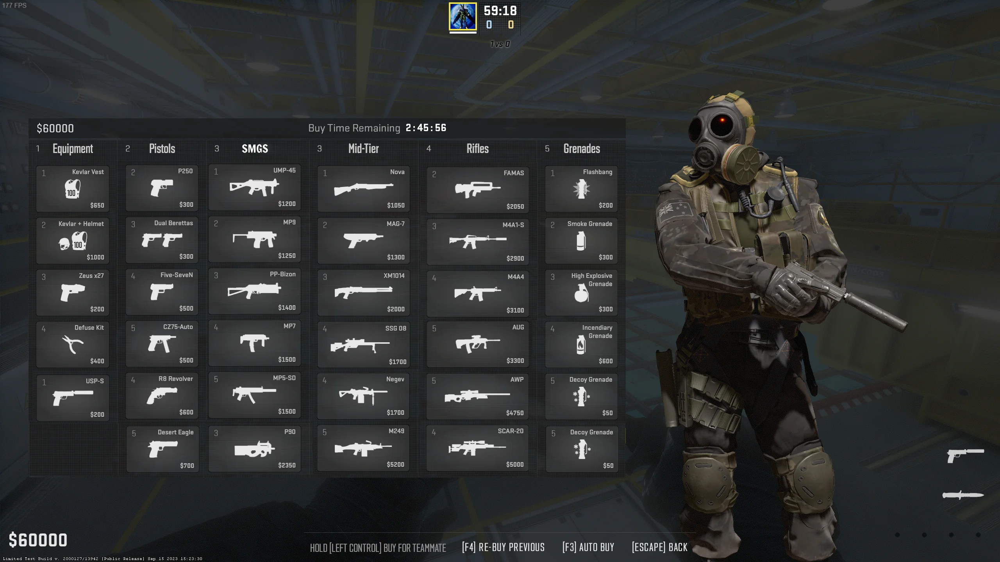

Tervetuloa Counter-Strike aihesivulle
Tervetuloa Counter-Strike sivuston etusivulle.
Tällä sivustolla tulet näkemään paljon perustietoa Counter-Strike pelisarjasta, sekä
sen tuomasta kulttuurista ja vaikutuksesta pelimaailmaan tänäpäivänä.
Counter-Strike on tällä hetkellä maailman suosituin ja pelatuin ensimmäisen persoonan
taktinen ammunta peli, jossa terroristit ja erikoisjoukot taistelevat vastakkain
erilaisissa kartoissa. Terroristien tavoitteena on tappaa kaikki erikoisjoukot ja
asettaa pommi maahan ja estää erikoisjoukkoja purkamasta pommia.


Counter-Strike pelin perus idea:
Pelin säännöt ovat seuraaavat:
terroristit vastaan erikoisjoukot
taistelevat 5 vastaan 5 joukkueilla pelissä ja jokaisen erän alussa ostetaan aseet
joilla taistelet kierroksen aikana.
Pelin kartoissa on A ja B paikat kartassa, jotka ovat
terroristeille tarkoitettuja pommin asettamis paikkoja.
Terroristit yrittävät päästä joko
A tai B paikalle ja asettaa pommi maahan. Erikoisjoukot hajaantuvat A ja B paikoille,
ja estävät pommin asettamisen maahan.
Counter-Strike peleissä on jokaisessa julkaisussa ollut samat pelin perus säännöt. Uusissa versioissa on vain päivitetty
pelin grafiikkaa, karttoja, aseita ja muita ominaisuuksia, mutta pelin perus idea on pysynyt samana.
Pelissä on vasemmalla alhaalla rahaa, joka on pelin valuutta. Rahaa saa kierroksen aikana tappamalla vastustajia, voittamalla
kierroksia ja suorittamalla erilaisia tehtäviä kartalla. Rahalla voi ostaa aseita, varusteita ja muita hyödykkeitä seuraavalle kierrokselle.